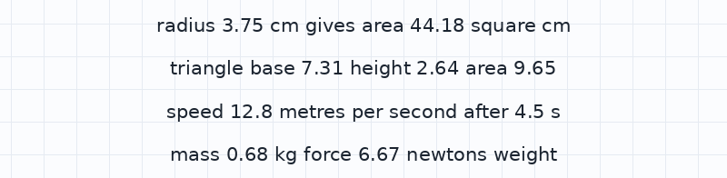
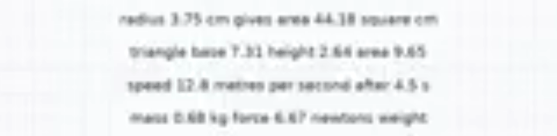

Crystal-clear lessons for the price of a voice note.
Vecta sends a lesson as the teacher's voice plus a tiny file of drawing instructions, not video. The student's phone draws the board itself, so every equation stays sharp while using far less data.
Area of a circle
At 144p, video saves data and loses the maths.
Many secondary students learn maths and science on low-cost phones with expensive prepaid data. To make that data last, they watch lesson videos at 144p, the lowest quality.
Big headings survive. The small labels, symbols and worked steps that carry the actual maths turn into blur.
A lesson is a voice note and a list of pen moves.
- Record
A teacher talks and draws in Vecta's record mode, with pen, text and equation tools. Vecta saves the voice and the time of every stroke. No video is made.
- Send
The lesson travels as compressed speech (16 kbps Opus) plus about 1 KB of drawing instructions.
- Draw
The student's phone redraws the board in time with the voice. Text and equations are real text, so they stay sharp on any screen. Saved lessons play with no signal.
{"t": 14.81, "type": "math",
"value": "A = \\pi r^2",
"x": 72, "y": 42, "size": 9}Measured, not estimated.
We built the same 49-second lesson, “Area of a circle”, twice with the teacher's recorded voice: once as a Vecta lesson and once as a 144p video.
Data for the whole lesson
| 144p video | Vecta | |
|---|---|---|
| Whole lesson | 523 KB | 103 KB about 5× smaller |
| Board | 192 KB of pixels | 1.1 KB of drawings about 175× smaller |
| Sound | 293 KB (48 kbps AAC) | 101 KB (16 kbps Opus) |
| Per hour of lessons | 38.7 MB | 7.6 MB |
The fair caveat: part of the 5× comes from the sound, because Vecta uses a smaller voice format. When we gave both versions the same voice file, the best case for video, Vecta was still 1.7× to 3.9× smaller (robot-voice version of the lesson, 144p to 720p).
Can small text still be read?
We set text at 3% of screen height and asked OCR software to read it back. It read 100% of the words and numbers from Vecta and 3% from 144p video.


Large headings and equations survive 144p. Small labels and symbols do not. OCR stands in for human eyes until our student test is done.
What we have not tested yet
- A readability test with real students
- A cheap Android phone in real use
- A filmed whiteboard lesson as the video benchmark
- A pilot with an NGO or school partner
Mission
Make maths and science lessons clear and affordable for students who pay for every megabyte.
Vision
A student's phone or data plan should never decide whether they can read the board.
What we stand for
Vecta is a nonprofit. Students never pay for lessons.
We publish only what we have measured, and we say what we have not tested yet.
Small downloads and offline play come before extra features.
No analytics and no trackers. Lessons you record stay on your phone.
How Vecta pays for itself
Lessons stay free for students. We plan to fund Vecta through grants, NGO partners, and by licensing the player to edtech companies.
The team
We are five high-school students entering the 2026–27 Conrad Challenge in the Cyber-Technology & Security category.